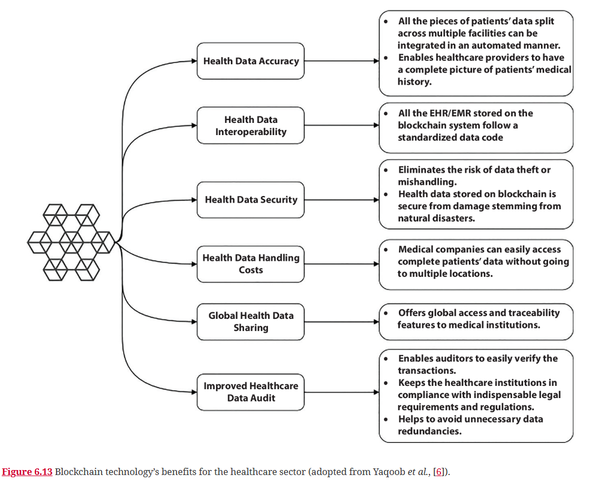

The healthcare industry is an information-intensive business, and the rise of Electronic Health Records (EHRs) and connected Internet of Things (IoT) devices has created significant challenges in protecting patient privacy. Blockchain technology offers a revolutionary solution by providing a secure, decentralized, and tamper-proof way to manage sensitive health data (Vaishnavi et al., 2025).
The Challenge: Data Privacy in a Connected World
IoT devices, such as smartwatches and remote medical sensors, are transforming healthcare by allowing for real-time patient monitoring. However, this raises concerns about data security, as this sensitive information is often stored on centralized cloud servers vulnerable to data breaches. Blockchain provides a new model where patients can have full control over their own data, granting access to doctors and researchers as needed instead of relying on a third party to protect it (Vaishnavi et al., 2025).
Real-World Applications
Ensuring Drug Authenticity: By creating an immutable and transparent record for every medicine, blockchain provides a powerful tool against drug counterfeiting, allowing the entire history of a drug to be traced from the manufacturer to the patient (Wason et al., 2025).
Improving Clinical Trials: All data related to a clinical trial can be stored securely and transparently on a blockchain, ensuring the results are reliable and can be easily audited (Wason et al., 2025).
Securing IoT Data: Blockchain can be used to create a secure and reliable platform for the exchange of sensitive EHR data from IoT sensors, enabling real-time tracking of patients while preserving privacy (Vaishnavi et al., 2025).
The Challenge: Fragmented and Insecure Data
As an information-intensive business, healthcare generates enormous amounts of sensitive data. A patient's medical records are often dispersed across multiple clinics, hospitals, and insurance companies, making it difficult to get a complete and accurate medical history. Current centralized systems are also vulnerable to data breaches, which can expose highly confidential information (Vadivelu et al., 2025).

Figure 6.13: Blockchain technology’s benefits for the healthcare sector.
The Blockchain Solution: A Unified and Secure Ledger
Blockchain offers a revolutionary solution by creating a single, secure, and shared digital ledger that can unify this fragmented system. Its core features provide immense benefits to the healthcare sector:
Health Data Accuracy: All of a patient's medical information—from prescriptions to lab results—can be integrated in an automated, tamper-proof manner. This gives healthcare providers a complete and accurate picture of a patient's medical history, leading to better and safer care.
Health Data Security: By decentralizing data storage, blockchain eliminates the risk of a single point of failure and makes the system far more resilient to cyberattacks. The immutable nature of the ledger ensures that data cannot be altered or mishandled.
Improved Auditing: The transparent nature of the blockchain enables auditors to easily verify transactions and helps healthcare institutions remain compliant with legal and regulatory requirements.
Advanced Use Case: Revolutionizing Clinical Trials
The development of new pharmaceuticals relies on a complex and expensive clinical trial process. Blockchain and smart contracts can be used to manage trial data, patient consent, and results in a transparent and reliable manner. This speeds up the research process and provides auditors with a clear, open framework to endorse the trial on ethical and legal grounds (Vadivelu et al., 2025).